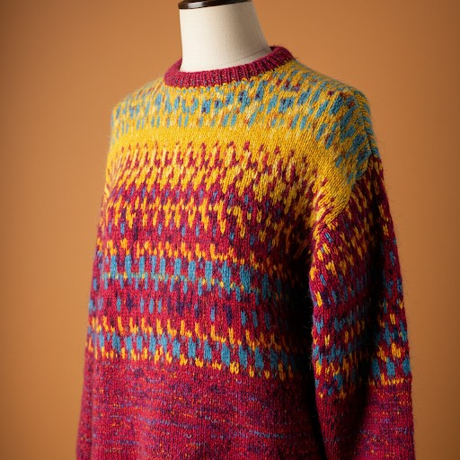

Luonnonkuidut
Tietoisku
Luonnokuidut ovat peräisin eläimistä tai kasveista. Ne tunnetaan erityisesti hengittävyydestään, luonnollisesta tuntumastaan ja ympäristöystävällisyydestään.
- Villa: Erinomainen lämmöneristyskyky ja joustavuus tekevät villasta täydellisen talvineuleisiin, kuten pipoihin, huiveihin ja villapaitoihin.
- Puuvilla: Hengittävä ja pehmeä puuvilla sopii kesäisiin vaatteisiin, vauvanpeittoihin ja muihin arjen projekteihin.
- Pellava: Vahva ja kevyt pellava on loistava valinta kevyisiin kesäneuleisiin ja kodin sisustukseen, kuten pöytäliinoihin
- Silkki: Ylellisen tuntuinen ja kiiltävä silkki toimii erityisesti juhlavissa neuleissa, huiveissa tai muissa hienostuneissa asusteissa.

Hoito-ohjeet
Luonnonkuidut rakastavat huolenpitoa, näin neuleesi tuottaa iloa pitkään:
- Pesu: Luonnonkuitulankoja kannattaa pestä varovasti. Useimmat langat vaativat käsipesun tai hellävaraisen konepesun matalassa lämpötilassa (30°C). Käytä mietoa pesuainetta, joka ei sisällä valkaisuaineita.
- Kuivaus: Älä väännä lankoja kuivaksi, sillä ne voivat menettää muotonsa. Kuivata tasolla ilmavasti välttääksesi venymistä ja muodonmuutoksia.
- Silitys: Jos silittäminen on tarpeen, käytä matalaa tai keskilämpöä. Muista sijoittaa suojakangas silitettävän materiaalin päälle, erityisesti herkille kuitutyypeille, kuten silkille.
- Varastointi: Säilytä luonnonkuitulangat viileässä, kuivassa paikassa. Vältä suoraa auringonvaloa, joka voi haalistuttaa värejä, ja pidä langat hyvin suojattuina kosteudelta.
- Erityisohjeet:Tutustu langan pakkauksessa oleviin ohjeisiin, sillä ne tarjoavat tarkempia suosituksia juuri sille materiaalille.